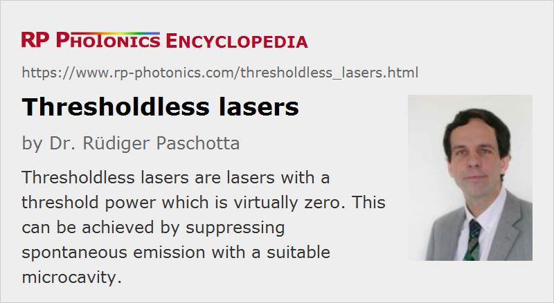

Thresholdless Lasers
Definition: lasers with a threshold power which is virtually zero
German: schwellenlose Laser
Categories: lasers, quantum optics
How to cite the article; suggest additional literature
Author: Dr. Rüdiger Paschotta
A thresholdless laser is a laser where the threshold pump power is essentially zero. Such a device was proposed by Kobayashi et al. in 1982 [1]. An essential point is that the spontaneous emission is forced to occur primarily into the spatial mode defined by the laser resonator. This is possible with a microcavity around the (microscopically small) gain medium, which modifies the mode structure of the environment of the gain medium. Even if there are several suitable modes, emission into the laser mode can be dominating if that mode has the highest Q factor.
Experimentally, some lasers with very low threshold powers based on this principle have been demonstrated, e.g. a vertical cavity surface-emitting laser with a threshold current of only 36 μA [4] and a photonic crystal nanolaser with a threshold pump power of 1.2 μW [8]. Another technical approach is the single-atom laser [7], which was demonstrated in 2003, and indeed exhibited a zero threshold pump power. In that case, even more subtle quantum optics phenomena are behind the thresholdless behavior.
Questions and Comments from Users
Here you can submit questions and comments. As far as they get accepted by the author, they will appear above this paragraph together with the author’s answer. The author will decide on acceptance based on certain criteria. Essentially, the issue must be of sufficiently broad interest.
Please do not enter personal data here; we would otherwise delete it soon. (See also our privacy declaration.) If you wish to receive personal feedback or consultancy from the author, please contact him e.g. via e-mail.
By submitting the information, you give your consent to the potential publication of your inputs on our website according to our rules. (If you later retract your consent, we will delete those inputs.) As your inputs are first reviewed by the author, they may be published with some delay.
Bibliography
| [1] | T. Kobayashi et al., “Novel-type lasers, emitting devices, and functional optical devices by controlling spontaneous emission”, presented at the 46th Fall Meeting of the Japanese Applied Physics Society, 1982, paper 29a-B-6 (in Japanese) |
| [2] | E. Yablonovitch and T. J. Gmitter, “Inhibited spontaneous emission in solid state physics and electronics”, Phys. Rev. Lett. 58 (20), 2059 (1987), doi:10.1103/PhysRevLett.58.2059 |
| [3] | H. Yokoyama and S. D. Brorson, “Rate equation analysis of microcavity lasers”, J. Appl. Phys. 66 (10), 4801 (1989), doi:10.1063/1.343793 |
| [4] | D. L. Huffaker and D. G. Deppe, “Improved performance of oxide-confined vertical-cavity surface-emitting lasers using a tunnel injection active region”, Appl. Phys. Lett. 71, 1449 (1997), doi:10.1063/1.119933 |
| [5] | J. M. Gérard and B. Gayral, “Strong Purcell effect for InAs quantum boxes in three-dimensional solid-state microcavities”, IEEE J. Lightwave Technol. 17 (11), 2089 (1999), doi:10.1109/50.802999 |
| [6] | I. Protsenko et al., “Quantum theory of a thresholdless laser”, Phys. Rev. A 59 (2), 1667 (1999), doi:10.1103/PhysRevA.59.1667 |
| [7] | J. McKeever et al., “Experimental realization of a one-atom laser in the regime of strong coupling”, Nature 425, 268 (2003), doi:10.1038/nature01974 |
| [8] | K. Nozaki et al., “Room temperature continuous wave operation and controlled spontaneous emission in ultrasmall photonic crystal nanolaser”, Opt. Express 15 (12), 7506 (2007), doi:10.1364/OE.15.007506 |
See also: laser threshold, threshold pump power, vertical cavity surface-emitting lasers, single-atom lasers
and other articles in the categories lasers, quantum optics
|  |
If you like this page, please share the link with your friends and colleagues, e.g. via social media:
These sharing buttons are implemented in a privacy-friendly way!